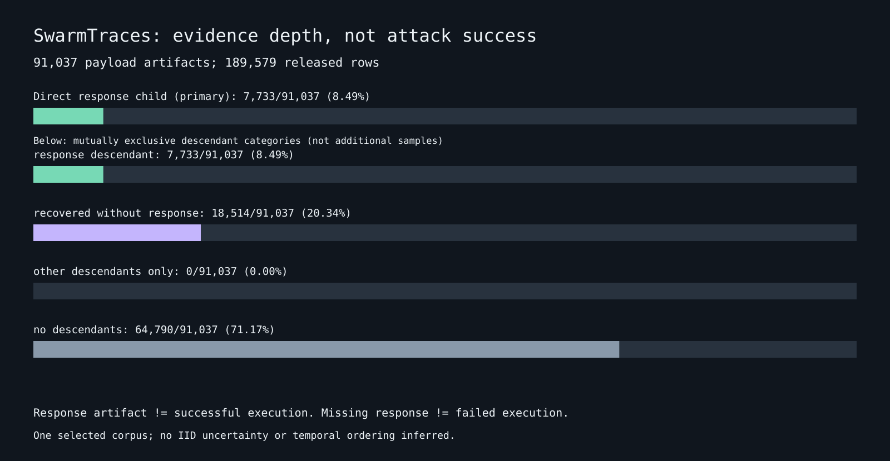

7,733/91,037 payload artifacts (8.49%) have a direct response child. This is artifact linkage, not an attack-success rate.

Parent links are reconstruction provenance, not conversation turns. Exact equal redacted texts do not prove shared origin. No payload is executed, decoded or sent to a model. Null timestamps are left null.
Source: SwarmTraces. Aggregate JSON and fingerprints.
{
"schema_version": 1,
"scope": "Census of one selected released artifact corpus; no independent-event, actor, execution or success estimate.",
"rows": 189579,
"kinds": {
"payload": {
"rows": 91037,
"nonempty_text_rows": 91037,
"empty_text_rows": 0,
"null_text_rows": 0,
"unique_nonempty_released_texts": 88672,
"redundant_text_rows": 2365,
"rows_in_repeated_text_groups": 2865,
"max_text_multiplicity": 392,
"nonnull_timestamp_rows": 0,
"no_parent_rows": 91037,
"orphan_parent_rows": 0
},
"recovered_text": {
"rows": 75534,
"nonempty_text_rows": 75534,
"empty_text_rows": 0,
"null_text_rows": 0,
"unique_nonempty_released_texts": 72603,
"redundant_text_rows": 2931,
"rows_in_repeated_text_groups": 3305,
"max_text_multiplicity": 804,
"nonnull_timestamp_rows": 0,
"no_parent_rows": 32826,
"orphan_parent_rows": 0
},
"response": {
"rows": 23008,
"nonempty_text_rows": 23008,
"empty_text_rows": 0,
"null_text_rows": 0,
"unique_nonempty_released_texts": 22721,
"redundant_text_rows": 287,
"rows_in_repeated_text_groups": 372,
"max_text_multiplicity": 96,
"nonnull_timestamp_rows": 0,
"no_parent_rows": 4591,
"orphan_parent_rows": 0
}
},
"payload_direct_response_coverage": {
"numerator": 7733,
"denominator": 91037,
"fraction": 0.08494348451728419
},
"payload_response_descendant_coverage": {
"numerator": 7733,
"denominator": 91037,
"fraction": 0.08494348451728419
},
"payload_descendant_categories": {
"response_descendant": 7733,
"recovered_without_response": 18514,
"other_descendants_only": 0,
"no_descendants": 64790
},
"response_rows_with_direct_payload_parent": {
"numerator": 18417,
"denominator": 23008,
"fraction": 0.8004607093184979
},
"graph": {
"valid_parent_edges": 61125,
"orphan_parent_rows": 0,
"no_parent_rows": 128454,
"components": 128454,
"singleton_components": 102206,
"max_component_rows": 859,
"component_size_histogram": {
"1": 102206,
"2": 16291,
"3": 4926,
"4": 1052,
"5": 1444,
"6": 170,
"7": 352,
"8": 138,
"9": 431,
"10": 276,
"11": 256,
"12": 418,
"13": 314,
"14": 33,
"15": 23,
"16": 16,
"17": 30,
"18": 6,
"19": 8,
"20": 8,
"21": 4,
"22": 2,
"23": 5,
"24": 1,
"25": 4,
"26": 2,
"27": 5,
"28": 1,
"29": 4,
"32": 1,
"33": 1,
"35": 2,
"37": 1,
"38": 1,
"44": 1,
"45": 3,
"47": 1,
"53": 1,
"55": 1,
"57": 1,
"71": 7,
"85": 1,
"91": 1,
"105": 1,
"109": 1,
"135": 1,
"271": 1,
"859": 1
},
"child_parent_kind_edges": [
{
"child_kind": "recovered_text",
"parent_kind": "payload",
"count": 42707
},
{
"child_kind": "recovered_text",
"parent_kind": "recovered_text",
"count": 1
},
{
"child_kind": "response",
"parent_kind": "payload",
"count": 18417
}
]
},
"text_sensitivity": {
"nonempty_rows": 189579,
"distinct_nonempty_released_texts": 163851,
"redundant_rows": 25728,
"rows_in_repeated_text_groups": 44763,
"max_multiplicity": 1094,
"multiplicity_histogram": {
"1": 144816,
"2": 16827,
"3": 1898,
"4": 106,
"5": 42,
"6": 31,
"7": 15,
"8": 18,
"9": 6,
"10": 13,
"11": 8,
"12": 8,
"13": 5,
"14": 7,
"15": 2,
"16": 3,
"17": 3,
"18": 4,
"19": 1,
"20": 3,
"21": 2,
"22": 1,
"24": 1,
"25": 1,
"26": 5,
"27": 2,
"29": 1,
"30": 1,
"32": 1,
"34": 2,
"36": 1,
"37": 1,
"38": 1,
"39": 1,
"43": 1,
"45": 1,
"51": 1,
"54": 1,
"55": 1,
"59": 1,
"65": 1,
"83": 1,
"86": 1,
"103": 1,
"120": 1,
"174": 1,
"897": 1,
"1094": 1
},
"cross_kind_shared_text_hashes": {
"payload__recovered_text": 2635,
"payload__response": 1931,
"recovered_text__response": 17396
},
"warning": "Equal redacted strings can arise from redaction or reconstruction; neither text hashes nor parent components certify independent events."
},
"payload_length_strata_characters": {
"0": {
"payloads": 0,
"with_direct_response": 0,
"with_response_descendant": 0,
"direct_response_fraction": null
},
"1-255": {
"payloads": 59341,
"with_direct_response": 1343,
"with_response_descendant": 1343,
"direct_response_fraction": 0.02263190711312583
},
"256-1023": {
"payloads": 23880,
"with_direct_response": 4331,
"with_response_descendant": 4331,
"direct_response_fraction": 0.18136515912897822
},
"1024-4095": {
"payloads": 6748,
"with_direct_response": 1632,
"with_response_descendant": 1632,
"direct_response_fraction": 0.24184943687018376
},
"4096+": {
"payloads": 1068,
"with_direct_response": 427,
"with_response_descendant": 427,
"direct_response_fraction": 0.399812734082397
}
},
"nonnull_timestamp_rows": 0,
"cost_usd": 0,
"model_calls": 0,
"provenance": {
"source_filename": "redacted.jsonl.gz",
"compressed_input_sha256": "7b66ab21674de52fcd3f557652f68b1801170c998e2f266862124e6edf283488",
"analyzer_sha256": "28efb5d3db0ed46cc7f2588b81e8a2ac8ec834986481abaa38235060a3608a24",
"python": "3.12.3",
"source_url": "https://swarmtraces.org/data/final/redacted.jsonl.gz"
}
}